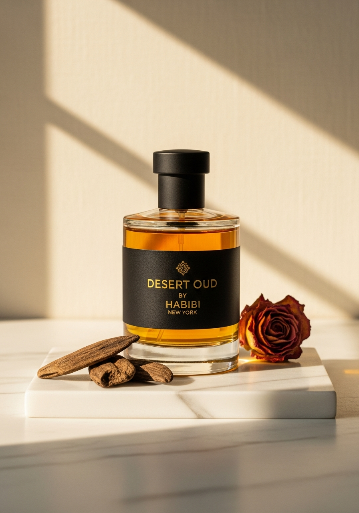
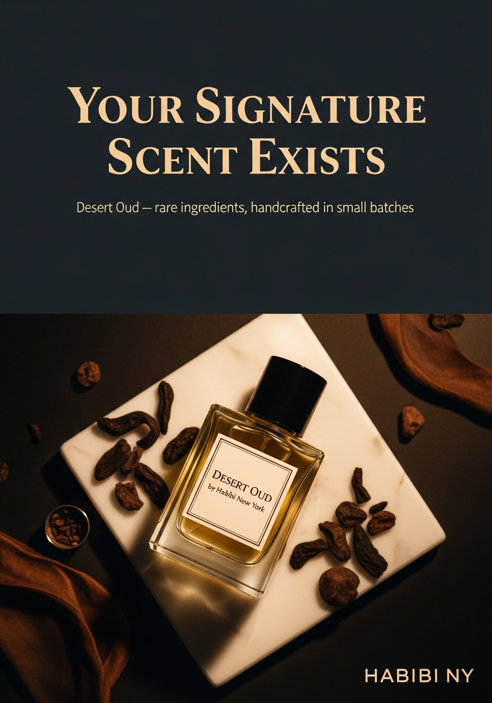
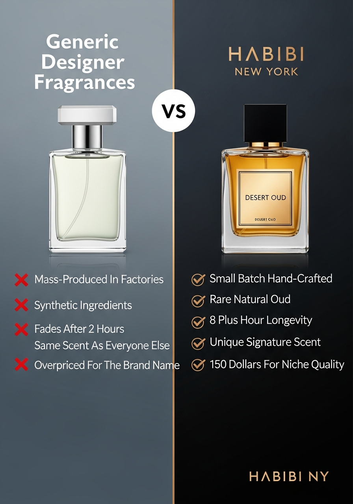
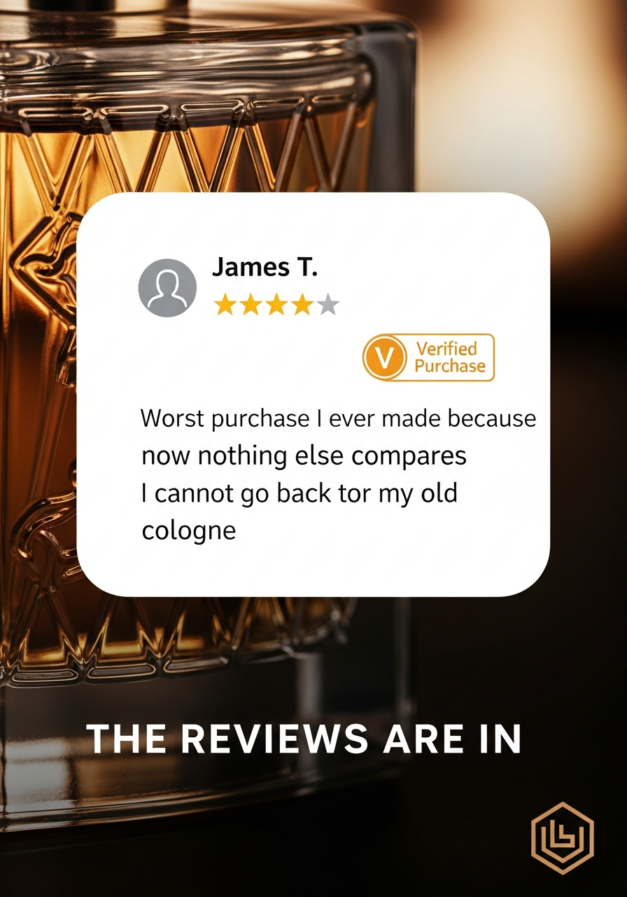
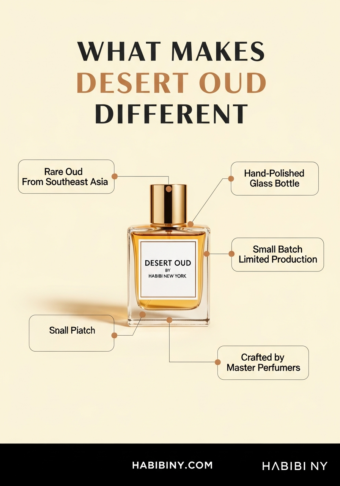
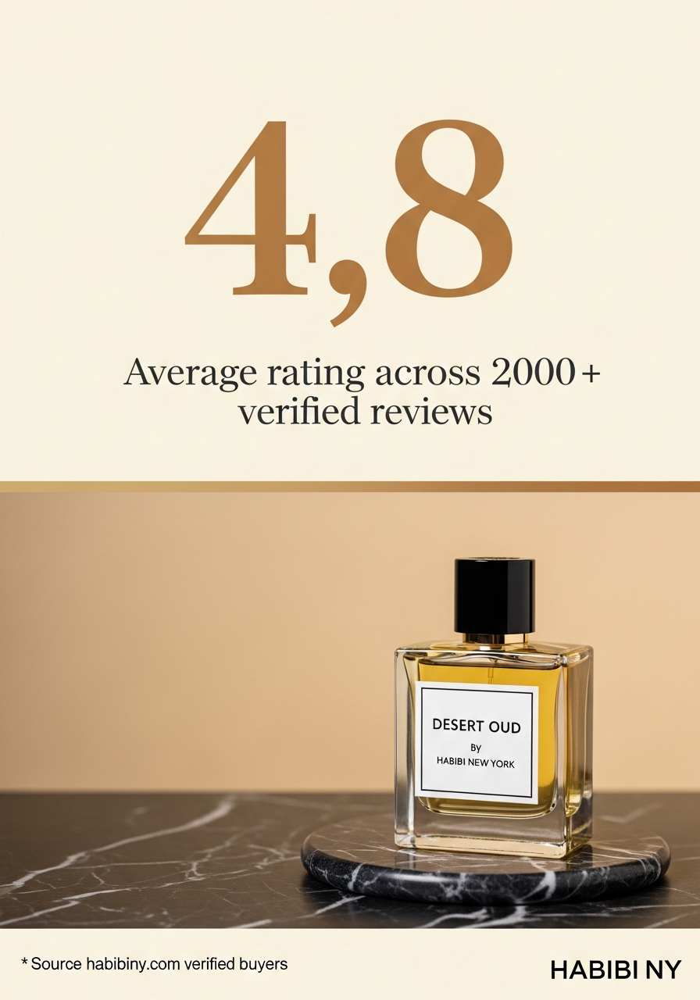
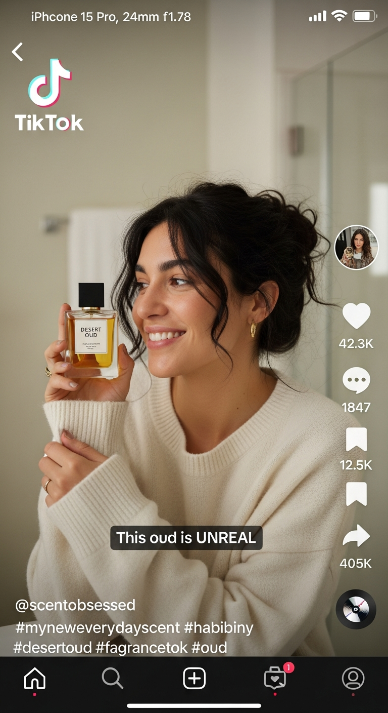
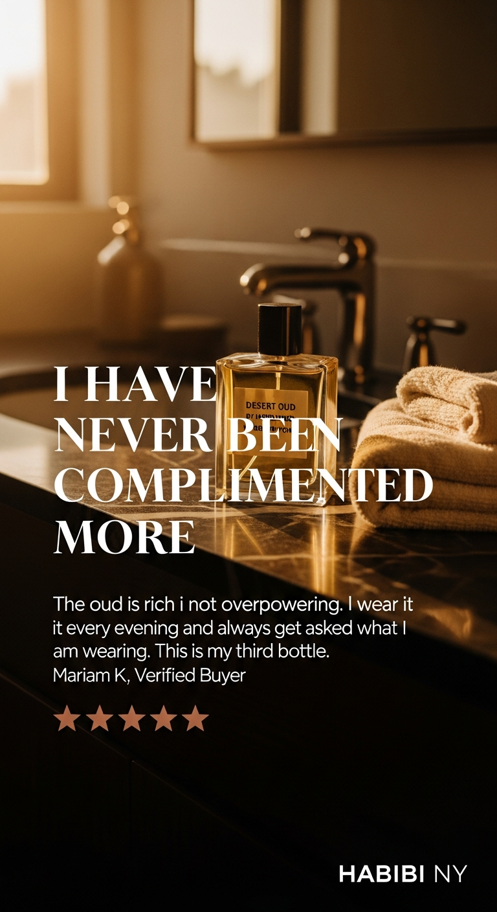

I ran Habibi through the same lens I use across 50+ ad accounts and $100M+ in managed spend. This is what a proper creative strategy looks like for your brand.
March 2026 · Ali Qureshi · Co-founder, Adcrate
I did a quick analysis of your site, your product catalogue, and your current ad presence. Here's what stands out.
The creative feels reactive, not planned. No clear testing structure, no angle rotation, no funnel-stage targeting. There's no sign of a system deciding what gets made and why — which means you're likely producing ads based on gut feel rather than data from what's already working.
The brands winning in fragrance right now are running mashups, statics, motion graphics, short-form UGC, longer product stories, founder-style talking heads — 6-8 different formats feeding the algorithm variety. That format diversity is what keeps CPAs low and gives platforms enough signal to optimise. Without it, you're testing one variable when you should be testing five.
Every ad tells the same story: here's the bottle, here's the name, here's the price. But you have 50+ products across oud, floral, citrus, and woody families. You sell by occasion — date night, office, workout. You have 15,000+ reviews full of vivid scent descriptions. That's dozens of untold stories sitting unused.
The visual style is one note — clean, minimal, product-focused. That works for your site. It doesn't work for stopping thumbs. You need raw UGC that feels native to TikTok. Cinematic lifestyle shots for Meta. Review compilations for retargeting. Different audiences respond to different visual languages.
Not just ads. A full paid creative strategy — personas, themes, testing frameworks, creative production, and a system to measure what's working.
You're selling to at least 3 distinct buyers — and each one needs different creative. These are initial sketches based on your site and product range. We'd flesh these out properly in the strategy session with your actual customer data.
Shopping for someone else. Driven by occasion (birthday, anniversary, Eid, Valentine's). Needs reassurance the gift will land. Your sets ($395-$470) and gift wrapping are built for this buyer — your ads should be too.
Collects fragrances. Knows what oud is. Cares about ingredients, longevity, sillage. Your rare-ingredient and small-batch positioning speaks directly to them. They'll respond to craft and exclusivity messaging.
Wants to smell good and get noticed. Doesn't care about ingredient sourcing — cares about compliments. Driven by outcome, social validation, identity. This is your highest-volume cold traffic audience.
Every ad starts with a theme, splits into angles, then gets produced across formats. This is how you go from 3 recycled ads to 40+ diverse creatives a month.
4 themes × 3 angles × 3 formats = 36 unique creative combinations before we even touch product-specific variations. That's the testing velocity you need.
Not "throw 20 ads up and see what sticks." A systematic approach to finding winners.
Run one ad per theme to find which resonates. Compliment vs Occasion vs Craft vs Gift. Measure hook rate and CTR. Kill losers fast.
Take the winning theme and test 3-4 angles within it. Same theme, different hooks. Find the specific message that converts.
Winning angle, multiple formats. UGC vs produced video vs static vs carousel. Find the format that delivers the best CPA.
Produce 5-10 variations of the winning combination. New actors, new scenes, new copy — same proven angle. Feed the algorithm fresh creative on a winning formula.
This cycle repeats monthly. Each month, the strategy gets sharper because we know what works and what doesn't.
This plan assumes you have video content coming in — from influencers, UGC creators, or your own shoots. I'll take that raw material and build it into ads. I can support with additional creative where needed, but the more content you feed in, the more we can produce.
Two streams run in parallel:
I take the video content you're already getting and re-cut it into mashup-style ads with different narratives, hooks, and structures. Same raw footage, multiple ads — each telling a different story.
AI lets us generate entirely new videos, visuals, and ad concepts — things your existing content can't produce. New stories, new formats, new visual directions to test against what's already working.
The two streams complement each other. Your existing content gives authenticity and social proof. AI gives you volume, new stories to test, and visual directions that would cost thousands to shoot traditionally.
Ads are one piece. The bigger play is building a creative operations system that compounds — so your brand doesn't depend on one person or one agency forever.
Through AdCreativeOps, I'd set up the operating system behind your creative: documented briefs, repeatable production workflows, a testing library that grows every month, and a creative database so you always know what's been tested and what worked.
This means your creative strategy doesn't start from scratch every month. It builds. Every test informs the next. Every winning angle gets documented and scaled. After 6 months, you have a playbook nobody else in your category has.
Creative without measurement is guesswork. Here's what I track every month to make sure we're moving in the right direction.
Monthly performance review. We sit down, look at what worked, kill what didn't, and plan next month's creative around real data — not assumptions.
These are initial AI-generated concepts for Desert Oud — produced in minutes, not days. This is the direction we'd build on, plus short-form video, b-roll, UGC-style content, and platform-specific formats.








8 of 14 formats shown. These are first-pass generations — produced in under 5 minutes total. In production, we'd refine these and add short-form video (hooks, transitions, supers), b-roll sequences, carousel variations, and platform-native formats for Meta, TikTok, and YouTube Shorts. Every creative gets reviewed by Ali before delivery.
Starter is the right entry point. 20 creatives/month gives you enough to run the full testing framework across your top-selling fragrances. Once we find what converts, Scale doubles the volume and adds produced video + voice cloning.
Strategy informed by work across
Reply to this proposal, pick your tier, and we lock in start date. Simple.
45-minute session. I learn Habibi's brand DNA, your best sellers, your audience data, your current ad performance, and your influencer content library. We define the personas and set creative direction for the first batch.
First round of creatives — mashup edits from your influencer content plus AI-generated creative. Delivered to your drive, organised by format and platform. You load, we learn.
Monthly performance review. We look at the data — what themes landed, which formats converted, where the CPA dropped. Next month's creative strategy is built on what we now know, not guesswork.
By month 3, you have a documented creative playbook — winning angles, proven formats, a testing library that grows every cycle. The strategy gets sharper every month because it's built on real performance data from your account.
Hit the button below, let me know which package works, and we'll lock in your start date.
I take 10 clients max. This proposal is valid for 14 days.